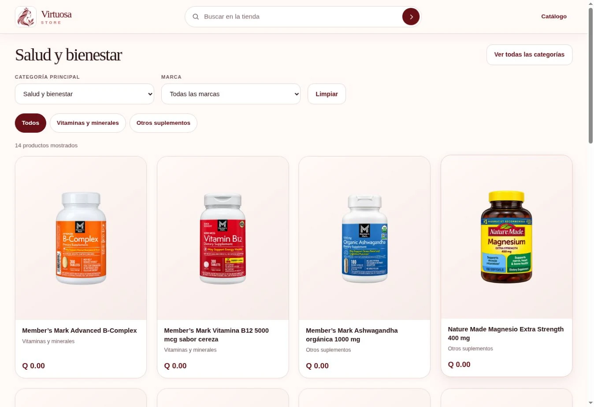
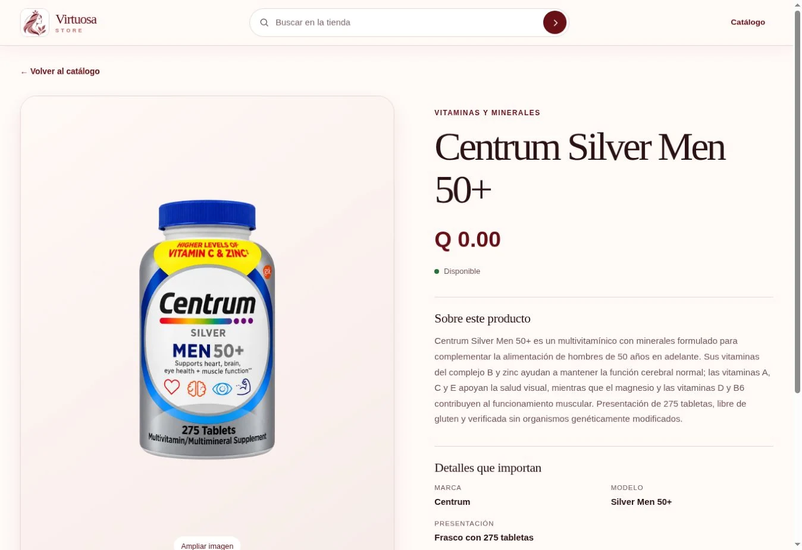

PROYECTO PRINCIPAL V1.4 en producción
ResellManager.
Una plataforma para gestionar un negocio de reventa, desde la compra hasta el cobro, con un catálogo público que conecta la operación con Virtuosa Store.
Centralizar productos, inventario, clientes y cuentas por cobrar para gestionar la operación comercial en un solo lugar.
- Compras, recepción e inventario
- Pedidos, reservas, ventas y pagos
- Scanner de códigos de barras y alta asistida de productos
- Catálogo público, galería con zoom y filtros por categoría y marca
- C#
- .NET 10
- Blazor
- EF Core
- SQLite


Capturas reales del catálogo de ResellManager ·